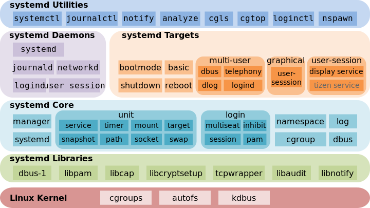

Jotham Apaloo
May 4, 2015
pandoc -t slidy -s presentation.org -o presentation.html
#http://pandoc.org/README.html#producing-slide-shows-with-pandocMotivation for systemd timers
Overview of presentation
Poettering (Red Hat) and Sievers (SUSE).
An init system and service manager.
Subject of some rather entertaining controversy.
Debian Jessie probably marks last of the mainstream distros to accept systemd ([2015-04-25 Sat]).
"since systemd appears to be here to stay...it was time to roll up my sleeves and RTFM"
Worth a couple introductions as some systemd commands are needed for timers
systemctl
systemctl status mandb.service
● man-db.service - Update man-db cache
Loaded: loaded (/usr/lib/systemd/system/man-db.service; static; vendor preset: disabled)
Active: inactive (dead) since Sun 2015-05-03 09:11:14 EDT; 11min ago
Process: 27288 ExecStart=/usr/bin/mandb --quiet (code=exited, status=0/SUCCESS)
Process: 27284 ExecStart=/usr/bin/mkdir -m 0755 -p /var/cache/man (code=exited, status=0/SUCCESS)
Main PID: 27288 (code=exited, status=0/SUCCESS)
May 03 09:11:10 archLenFlex systemd[1]: Starting Update man-db cache...
May 03 09:11:14 archLenFlex systemd[1]: Started Update man-db cache.
Binary log format accessed through
journalctl
journalctl -xu man-db --since today
-- Logs begin at Tue 2014-05-13 09:48:52 EDT, end at Sun 2015-05-03 09:29:00 EDT. --
May 03 09:11:10 archLenFlex systemd[1]: Starting Update man-db cache...
-- Subject: Unit man-db.service has begun start-up
-- Defined-By: systemd
-- Support: http://lists.freedesktop.org/mailman/listinfo/systemd-devel
--
-- Unit man-db.service has begun starting up.
May 03 09:11:14 archLenFlex systemd[1]: Started Update man-db cache.
-- Subject: Unit man-db.service has finished start-up
-- Defined-By: systemd
-- Support: http://lists.freedesktop.org/mailman/listinfo/systemd-devel
--
-- Unit man-db.service has finished starting up.
--
-- The start-up result is done.
Before systemd timers, understand a bit about unit files in general
Units encapsulate various objects relevant to system boot-up and maintenance.
12 varieties
| service | socket | target | device | mount |
| snapshots | swap | timers | path | slice |
| mount | automount | slice | scope |
systemd also provides dependency framework between these units (another presentation perhaps)
Naming convention uses the unit type as suffix.
Where exactly?
Regardless of distro, should be able to find them as follows.
pkg-config systemd --variable=systemdsystemconfdir
/etc/systemd/system
pkg-config systemd --variable=systemduserconfdir
/etc/systemd/userThose locations take precedence over the unit files installed by packages in
/usr/lib/systemd/
Encodes information about a process governed by systemd.
| [Unit] | generic unit information |
| [Install] | installation information |
| used not at runtime but by | |
| systemctl enableand disable | |
| [%type%] | type specific configuration |
| e.g. service, timer |
cat /etc/systemd/system/multi-user.target.wants/ntpd.service
[Unit]
Description=Network Time Service
After=network.target nss-lookup.target
Conflicts=systemd-timesyncd.service
[Service]
Type=forking
PrivateTmp=true
ExecStart=/usr/bin/ntpd -g -u ntp:ntp
Restart=always
[Install]
WantedBy=multi-user.target
Simple assumes ExecStart is main process of the service.
Oneshot assumes process must exit before follow-up units are started.
For the simple timers I wanted to set up, either works.
WantedBy=multi-user.target
Starts the current unit when the multi-user.target unit is started
Enabling the unit containing WantedBy creates a symlink in the wants directory of the listed unit
All units (symlinked or otherwise) in some-unit.wants are implicity dependencies of some-unit
ExecStart
Absolute path to executable followed by arguments to that executable
Prefix with "-" to ignore failures
With Type=oneshot, can have multiple ExecStart lines
ExecStart are not bash commands; can't use pipes and redirection and so forth, see service man
Environment variables are available in unit files, if not quoted with " they will be expanded as multiple arguments where spaces are present
myunit.targetmyunit.target.wants, with all of the service units wanted by the groupcat /usr/lib/systemd/system/multi-user.target
# This file is part of systemd.
#
# systemd is free software; you can redistribute it and/or modify it
# under the terms of the GNU Lesser General Public License as published by
# the Free Software Foundation; either version 2.1 of the License, or
# (at your option) any later version.
[Unit]
Description=Multi-User System
Documentation=man:systemd.special(7)
Requires=basic.target
Conflicts=rescue.service rescue.target
After=basic.target rescue.service rescue.target
AllowIsolate=yes
ls /usr/lib/systemd/system/multi-user.target.wants
dbus.service
getty.target
logrotate.timer
man-db.timer
shadow.timer
systemd-ask-password-wall.path
systemd-logind.service
systemd-user-sessions.service
Same generic [unit] and [install] sections
And unit type specific [timer] section
cat /etc/systemd/system/pacqkk.timer
[Unit]
Description=Pacman -Qkk change observer
[Timer]
Persistent=True
OnCalendar=*-*-* 19:00:00
Unit=pacqkk.service
[Install]
WantedBy=timers.target
Run relative to some event
90m -> 90 minute after event
| specification | relative to |
|---|---|
| OnActiveSec | timer activation |
| OnBootSec | boot |
| OnStartupSec | systemd start |
| OnUnitActiveSec | activation of unit which timer activates |
| OnUnitInactiveSec | deactivation of unit which timer activates |
Similar to crontab (AFAIK monotonic ones not readily implemented)
Specified following man systemd.time syntax
Day Y-M-D HH:MM:SS
* wildcard
m/n at m and all values m+n*i for i in integers
Mon-Fri
monday,thursday-saturday
minutely, hourly, daily, ...., quarterly, semiannually, annually also parse to logical timestamps
AccuracySec
unit will be activated within this time from what is specified by timer
Unit
defaults (and recommended) to service with same name as timer
Persistent
for timers configured with OnCalendar, runs service if it would've been run one or more times since last activation
WakeSystem
bool, should the timer's activation resume the system from suspend
Run from crontab
crontab -l
# Chronological table of program loadings
# Edit with "crontab" for proper functionality, "man 5 crontab" for formatting
MAILTO=jothamapaloo@gmail.com
#mm hh DD MM W /path/progam [--option]... ( W = weekday: 0-6 [Sun=0] )
0 19 * * * /bin/backup_home
0 20 * * 3 /bin/backup_system && /bin/backup_storage
0 21 * * 0 /bin/trim
Or /etc/cron.[frequency]
ls /etc/cron*
/etc/cron.deny
/etc/cron.d:
0hourly
/etc/cron.daily:
/etc/cron.hourly:
0anacron
/etc/cron.monthly:
/etc/cron.weekly:Understand what unit files are, how service and timer units are related, how target units and wants can be used, and the syntax for timer units.
Setup a basic timer
Create a template service to email the status of failed services
Demonstate how timer targets can be used in the fashion of cron.hourly,daily,weekly,monthly
systemctl list-timers --all
NEXT LEFT LAST PASSED UNIT ACTIVATES
Sun 2015-05-03 19:00:00 EDT 4h 16min left Sat 2015-05-02 19:18:11 EDT 19h ago pacqkk.timer pacqkk.service
Mon 2015-05-04 00:00:00 EDT 9h left Sun 2015-05-03 09:11:10 EDT 5h 32min ago logrotate.timer logrotate.service
Mon 2015-05-04 00:00:00 EDT 9h left Sun 2015-05-03 09:11:10 EDT 5h 32min ago man-db.timer man-db.service
Mon 2015-05-04 00:00:00 EDT 9h left Sun 2015-05-03 09:11:10 EDT 5h 32min ago shadow.timer shadow.service
Mon 2015-05-04 11:50:54 EDT 21h left Sun 2015-05-03 11:50:54 EDT 2h 52min ago systemd-tmpfiles-clean.timer systemd-tmpfiles-clean.service
5 timers listed./etc/systemd/system/
cat /etc/systemd/system/test.timer
[Unit]
Description=Test timer
[Timer]
OnCalendar=2015-5-4 19-21:*:00
[Install]
WantedBy=timers.target
cat /etc/systemd/system/test.service
[Unit]
Description=test
[Service]
ExecStart=/usr/bin/date
list-timers all
start
change and reload
Setup a failure status email as a template service.
From a service's [Unit] section, e.g.
cat /etc/systemd/system/pacqkk.service | grep Fail
OnFailure=status-email-jotham@%i.serviceThat looks for a service by the exact name, and if not found instantiates a template service.
cat /etc/systemd/system/status-email-jotham@.service
[Unit]
Description=status email for %I to jotham
[Service]
Type=oneshot
ExecStart=/home/joth/bin/systemd-email.sh jothamapaloo@gmail.com %i
Group=systemd-journal
interpreted unit file variables
In this case the template service executes a script which takes an email and unit name and sends the output of systemctl status unit to the given email
cat ~/bin/systemd-email.sh
#!/bin/bash
/usr/bin/sendmail -t <<ERRMAIL
To: "$1"
From: systemd <"root@$HOST">
Subject: "$2"
Content-Transfer-Encoding: 8bit
Content-Type: text/plain; charset=UTF-8
$(systemctl status --full "$2")
ERRMAIL
# hack?
sleep 10s
.
